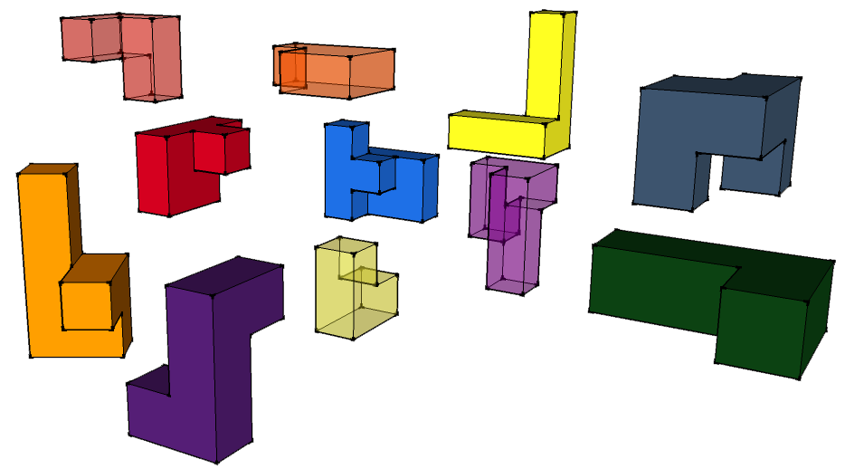
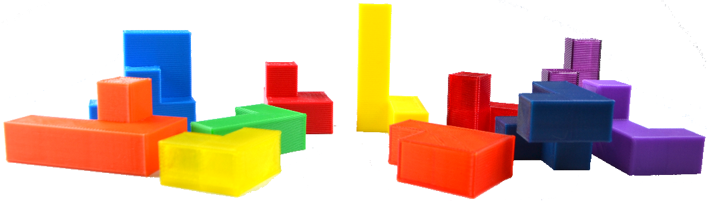

Take the 11 3D-printed pieces and manipulate them into a cube. The pieces without scaling print a 2 x 2 x 2 inch cube. It is easiest to think of it as 4 “units” make an edge of the cube.
All the pieces in a zip of individual files.
Or view the files on github
For different color pieces print a single file at a time. For pieces of the same color add each stl file to the preview and move them to fit your build plate/area.
I tried my mobile friends but this works best in WebGL enabled browsers with a mouse. It may be possible on mobile but the experience was not as nice.
Click and drag a piece to move it click and drag the surrounding area to rotate the view.
The code for this example and website can be found here.
To give everyone a chance to solve it first click here for my solution.
While printing this I had a bit of time on my hands in front of a few 3D printers. I have printed some designs off the internet in the past and thought it was time I made something of my own. Puzzles are fun for me and I thought it would be something easy to start off with.
Ended up using google sketch-up to create the pieces but needed this extension to get printable stl files.
Case Western Reserve University think[box]'s is a great maker space open to the public in Cleveland Ohio. I used one of their MakerBot Replicator 2 printers to print the pieces. As I wanted all my pieces to be different colors I used fillament which they provide for a small cost. As an undergraduate student I ended up paying $10.20 for all of the filament I used.
While probably an unecessary step I am a CS major and it just felt weird to have a project without any coding involved. three.js is a library I have been wanted to try out for a while and I was not dissapointed. Mostly I followed this example but the tricky part was actually getting the models into three.js as I didn’t want to recreate the models in code when I had them in reasonable files already and they may change and it would be easier to generate new files.
I attempted to use three.js’ Collada loader and exporting to dae from Google Sketchup but it seemed like not all of the required material and model properties were not getting exported so the final solution was something similar to this blog post. Ended up needing to install this blender to three.js exporter. Long story short: Google Sketchup > STL file > Blender > three.js json file > JSONLoader > draggable cubes example. Javascript for this puzzle is here.
I attempted to map touch events to the mouse event handlers but it seems there are still a few bugs that I will need to work out in the future.
Sarah Whelan is a Computer Science major at Case Western Reserve University graduating in Decemeber 2016.
She likes puzzles and making things. Feel free to reach out about this project, CS, or anything really:
